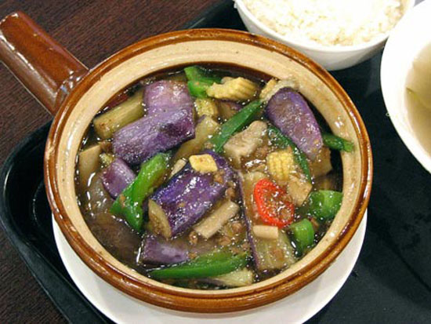

Chi Tiết Sản Phẩm
Canh cà tím bung
Món ăn dân dã canh cà tím bung là món ăn được nhiều người vô cùng yêu thích. Cà tím bung chín mềm, canh đậm đà với đậu thịt vị chua man mát tất cả như hòa quyện vào nhau tạo nên món ăn vừa dân dã mà lại hài hòa hấp dẫn. Bạn có thể thưởng thức món Cà tím bung này vào thời tiết nào cũng được, nhất là ngày lạnh có bát canh cà tím bung nóng sốt ăn cùng cơm nóng thật ấm lòng ^^.